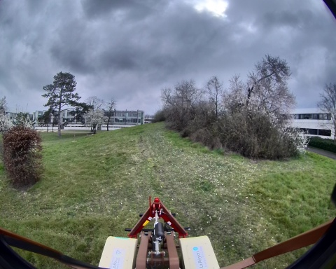
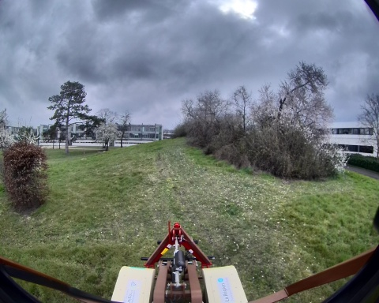
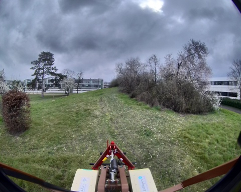

Chemin complet : /data/synchro_data/Innodura/Agrivia/Données/2025_bag/pente_11_14_03_2025

Files: pente_11_14_03_2025_0.db3
Bag size: 782.6 MiB
Storage id: sqlite3
Duration: 17.370059248s
Start: Mar 14 2025 13:50:34.205406117 (1741956634.205406117)
End: Mar 14 2025 13:50:51.575465365 (1741956651.575465365)
Messages: 15732
Topic information: Topic: /robot/localisation/filtered_odom | Type: nav_msgs/msg/Odometry | Count: 170 | Serialization Format: cdr
Topic: /robot/imu/mag | Type: sensor_msgs/msg/MagneticField | Count: 1725 | Serialization Format: cdr
Topic: /alpo/lidar/pointcloud_synchro | Type: sensor_msgs/msg/PointCloud2 | Count: 96 | Serialization Format: cdr
Topic: /robot/localisation/angular_speed | Type: romea_localisation_msgs/msg/ObservationAngularSpeedStamped | Count: 1725 | Serialization Format: cdr
Topic: /robot/imu/velocity | Type: geometry_msgs/msg/TwistStamped | Count: 1725 | Serialization Format: cdr
Topic: /robot/joint_states | Type: sensor_msgs/msg/JointState | Count: 1726 | Serialization Format: cdr
Topic: /tf | Type: tf2_msgs/msg/TFMessage | Count: 478 | Serialization Format: cdr
Topic: /robot/joystick/joy | Type: sensor_msgs/msg/Joy | Count: 129 | Serialization Format: cdr
Topic: /alpo/camera/image_synchro | Type: sensor_msgs/msg/Image | Count: 96 | Serialization Format: cdr
Topic: /robot/localisation/course | Type: romea_localisation_msgs/msg/ObservationCourseStamped | Count: 173 | Serialization Format: cdr
Topic: /robot/localisation/attitude | Type: romea_localisation_msgs/msg/ObservationAttitudeStamped | Count: 1726 | Serialization Format: cdr
Topic: /robot/localisation/status | Type: romea_localisation_msgs/msg/LocalisationStatus | Count: 172 | Serialization Format: cdr
Topic: /robot/gps/ntrip/rtcm | Type: mavros_msgs/msg/RTCM | Count: 189 | Serialization Format: cdr
Topic: /diagnostics | Type: diagnostic_msgs/msg/DiagnosticArray | Count: 160 | Serialization Format: cdr
Topic: /rosout | Type: rcl_interfaces/msg/Log | Count: 265 | Serialization Format: cdr
Topic: /robot/gps/nmea_sentence | Type: nmea_msgs/msg/Sentence | Count: 519 | Serialization Format: cdr
Topic: /robot/robot_description | Type: std_msgs/msg/String | Count: 1 | Serialization Format: cdr
Topic: /robot/base/bridge/vehicle_controller/odom | Type: nav_msgs/msg/Odometry | Count: 174 | Serialization Format: cdr
Topic: /tf_static | Type: tf2_msgs/msg/TFMessage | Count: 6 | Serialization Format: cdr
Topic: /robot/localisation/twist | Type: romea_localisation_msgs/msg/ObservationTwist2DStamped | Count: 173 | Serialization Format: cdr
Topic: /robot/imu/imu_data_str | Type: std_msgs/msg/String | Count: 1726 | Serialization Format: cdr
Topic: /robot/localisation/position | Type: romea_localisation_msgs/msg/ObservationPosition2DStamped | Count: 173 | Serialization Format: cdr
Topic: /parameter_events | Type: rcl_interfaces/msg/ParameterEvent | Count: 0 | Serialization Format: cdr
Topic: /robot/gps/fix | Type: sensor_msgs/msg/NavSatFix | Count: 173 | Serialization Format: cdr
Topic: /robot/gps/vel | Type: geometry_msgs/msg/TwistStamped | Count: 160 | Serialization Format: cdr
Topic: /robot/imu/data | Type: sensor_msgs/msg/Imu | Count: 1726 | Serialization Format: cdr
Topic: /robot/base/controller/odometry | Type: romea_mobile_base_msgs/msg/OneAxleSteeringMeasureStamped | Count: 173 | Serialization Format: cdr
Topic: /robot/base/controller/odom | Type: nav_msgs/msg/Odometry | Count: 173 | Serialization Format: cdr